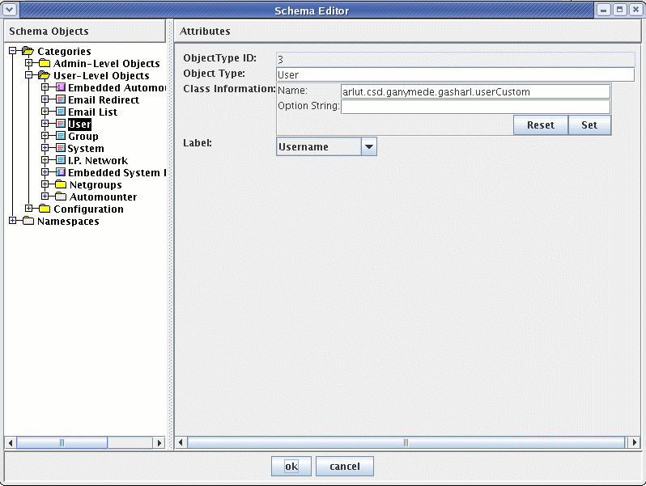
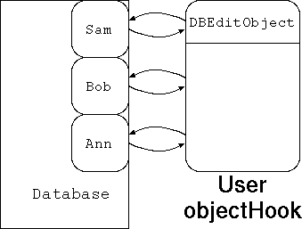
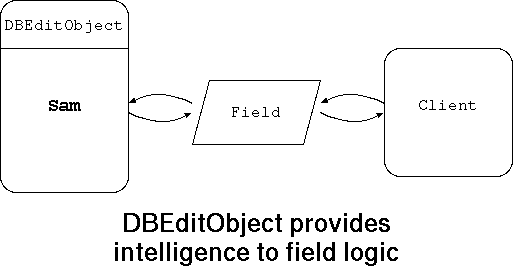

DBEditObject Subclass Customization Guide
The Ganymede server is designed to manage objects, their
properties, and their relationships with other objects. These
objects typically correspond directly to entities in a network,
such as users, groups, systems, sub-network records, and so on.
In order to handle these objects properly, the server has to
know how to initialize them, how to edit them, and how to delete
them, as well as how to manage all the details along the way.
The server has been written so that all of these details are
handled by the DBEditObject
class. DBEditObject
handles these details, and provides hooks to allow adopters to
customize the management of object types by writing subclasses
of DBEditObject.
Among other things, DBEditObject handles:
-
Object initialization, inactivation, reactivation, and
deletion logic.
-
Granting exceptions to the normal permissions system, such
as allowing an admin who can edit a user to take the user
out of a group, even if the admin wouldn't normally be able
to edit the group.
-
Providing a list of choices for string and invid
fields.
-
Overseeing all operations on fields, including the ability to
refuse any operation on any field, the ability to make changes
in other objects in response to operations on fields, and the
ability to create wizard dialogs to walk the user through the
ramifications of making certain kinds of changes to contained
fields.
-
Validating objects for completeness and consistency at
transaction commit time.
-
Taking special actions outside of the Ganymede database when
a transaction involving a managed object type is committed.
Typically, all but the most simple of object types in the
Ganymede database will have a custom subclass of DBEditObject
associated with it to manage the special requirements of that
object type.
How Do You Create A Subclass? |
When the Ganymede server package has been installed, you will
see a 'schema' directory under the installation directory.
Under that is a 'custom_src' directory. This directory contains
build scripts 'build' and 'buildCustomJar' and, if you chose one
of the pre-configured schema, it will contain a set of
.java files. These files are the source code for classes
that fit into three general categories:
-
Builder classes
-
DBEditObject subclasses
-
Wizard classes and other helper classes used by one of the above.
At present, we are interested in the DBEditObject
subclasses. The way to identify these files is simply by
looking at the top of the file. If a file is a DBEditObject
subclass, you will something similar to the following:
public class userCustom extends DBEditObject implements SchemaConstants, userSchema {
When you run the 'build' script in the
schema/custom_src/ directory, all .java files in
that directory will be compiled. Then, by running the
'buildCustomJar' script, the classes compiled from these .java
files will be incorporated into the custom.jar file which the
runServer script includes in the server's CLASSPATH.
So, if you are creating a new schema, or creating a new
management class for an existing object, all that you have to do
is to create a .java file in the schema/custom_src/
directory, and run the 'build' and 'buildCustomJar' scripts.
However, just because the class exists and has been bound into
the custom.jar file where the server can access it, this doesn't
mean that the server knows about it, or knows which object type
is to be managed by it. This brings us to our next point.
How Do You Attach A Subclass To An Object Type? |
You use the schema editor. Once you have built the custom.jar
file in the schema directory, run the admin console and choose
the 'Edit Schema' menu item. Once the schema editor window
appears, click on the object type you want to manage with your
new class, and enter the fully qualified name (package name and
class name) of the class in the 'Class name:' field, as shown
below.

Click 'Ok', shut the server down using the admin console (don't
just kill the server process.. the server won't remember the
change if it has not had time to do a full dump of the
database), start the server back up, and your class will be
managing the object type.
Well, it will look like something like this:
package arlut.csd.ganymede.custom;
import arlut.csd.ganymede.*;
public class userCustom extends DBEditObject {
The section above defines this class as being a subclass of
DBEditObject, and defines the package as
arlut.csd.ganymede.custom. The package could in fact be
anything you like, but it should be consistent among your files
to keep things clear.
The import statement is mandatory, as the Java
compiler needs to know where to go to look for the definition of
the DBEditObject class that we are extending,
which is defined in package arlut.csd.ganymede.
Next, we have 3 mandatory constructor definitions. These should
be exactly as they appear below, except the name should match
the name of your class. Each of these 3 constructors are used
in the Ganymede server in different contexts, and all must
be present.
/**
*
* Customization Constructor
*
*/
public userCustom(DBObjectBase objectBase)
{
super(objectBase);
}
/**
*
* Create new object constructor
*
*/
public userCustom(DBObjectBase objectBase, Invid invid, DBEditSet editset)
{
super(objectBase, invid, editset);
}
/**
*
* Check-out constructor, used by DBObject.createShadow()
* to pull out an object for editing.
*
*/
public userCustom(DBObject original, DBEditSet editset)
{
super(original, editset);
}
Now we get into the meat of the subclass.. the method
definitions. The whole point of creating a subclass of
DBEditObject is
to redefine methods that are called by other
objects during the course of operation of the Ganymede server.
In this example, we redefine one of the simplest methods in
DBEditObject,
fieldRequired().
Another (non-redefinable) method
in DBEditObject,
checkRequiredFields(),
calls this method to see
whether a given field must be defined when an object of this
type is committed during the course of server's commit logic.
By redefining this method in the subclass we are creating, we
effectively modify how the commit operation proceeds. In this
case, we are telling the server what fields in a user object
must be filled out when a transaction is committed. Note that
we make use of other methods defined in the server
(isInactivated()),
and an interface that we have (manually) defined
that contains the numeric id's for the fields in our user object.
/**
*
* Customization method to control whether a specified field
* is required to be defined at commit time for a given object.
*
* To be overridden in DBEditObject subclasses.
*
* *PSEUDOSTATIC*
*
*/
public boolean fieldRequired(DBObject object, short fieldid)
{
// If the user has been inactivated, we don't need to have a
// password defined for the user. Otherwise, insist that
// the username, uid, home directory, and login shell be
// defined.
if (object.isInactivated())
{
switch (fieldid)
{
case userSchema.USERNAME:
case userSchema.UID:
case userSchema.HOMEDIR:
case userSchema.LOGINSHELL:
return true;
}
}
else
{
switch (fieldid)
{
case userSchema.USERNAME:
case userSchema.UID:
case userSchema.LOGINSHELL:
case userSchema.HOMEDIR:
case userSchema.PASSWORD:
return true;
}
}
return false;
}
}
Now, of course, the devil is in the details. There are some
basic things you need to know about how the DBEditObject class
is used in the server in order to properly approach the task of
creating or editing your own management subclass. First and
foremost, you need to understand the different circumstances in
which the Ganymede server turns to an instance of a DBEditObject
class to get things done.
There are two circumstances in which a DBEditObject class (or
subclass) gets brought in to manage objects in the database.
|
The first is when an object in the database is being examined
outside of the context of an editing transaction. In this case,
code in the query engine, permissions code, or capabilities code
(is this object of a type that may be inactivated and
reactivated?) consult a single instance of the DBEditObject class
or subclass that has been created in the server to serve as a
reference for objects of that type.
In the diagram to the right, user objects held in the
database are consulting the fixed instance of userCustom
that the server has created, to determine whether they
should generate a custom label for the query engine, which
is busy preparing a list of objects with their labels to
be sent to the client. In our case, we haven't overridden
the
getLabelHook()
method, so the default DBEditObject method is called, and
the objects in the database simply look in their label
field (specified in the schema editor) to return their
default label.
|

|

|
The other, and more significant case in which a
DBEditObject subclass is involved is when an object is
being edited. In this case, the db_object
remote handle actually references an instance of the
DBEditObject class or subclass. The client can actually
call methods (such as
canInactivate()) that you yourself may override in your
DBEditObject subclass.
For the most part, however, the methods that you will write to guide
the actual editing process will not be called directly by the client.
Instead, the methods you write will be called by the transaction logic
in the DBEditSet
transaction class, or by the field objects that the client directly manipulates.
|
|
Mostly, the client will interact with your custom methods by
calling the ordinary remote methods defined in the
db_field
remote interface. These methods, implemented on the server in the
DBField class
and its type-specific sub-classes, call many methods in the DBEditObject
object that they belong to in order to coordinate the editing process.
|

|
The most important difference between the two cases above is
that in the 'reference object' case, the methods you write must
be sure not to try to examine the state of the DBEditObject
the methods are contained in. Such methods are labeled
*PSEUDOSTATIC*. If you override a method labeled
*PSEUDOSTATIC*, you should pretend that the method is
static, and that you can only examine the parameters you're
given, and anything you can find out through them, but not the
state of the 'this' object. Otherwise, if your code assumes that
it can access information that 'has to be there', you may find the
server throwing NullPointerExceptions, or worse.
In the methods for customizing the editing process (the
non-*PSEUDOSTATIC*, non-final methods in DBEditObject),
you are free to check out the current state of the DBEditObject
(userCustom, etc.) object your methods are operating on.
Because DBEditObject
is itself inherited from the basic DBObject
class used to store data in the server, you can look at the
fields defined in the object to decide whether the overall
context is propitious for the operation the client is
requesting.
In addition, because in the 'editing' methods you have a normal
local object context, you can define whatever additional object
fields and object methods you like to help you make the decisions
that the customization methods may require of you.
One more point. The three mandatory constructors discussed in
the example above correspond to the contexts in which a DBEditObject
subclass will be instantiated. The first constructor is used
for the reference objectHook methods, the second for when a
wholly new object is created, and the third when an previously
existing object is being checked out for editing. More on the
life and times of objects during the editing process in the next
session.
DBEditObject Editing Lifecycle |
Most of the time, DBEditObject
objects exist in the server because an object from the database
is being edited by the client. This section talks about how the
various non-pseudostatic non-final methods in DBEditObject
subclasses get involved along the way from creation/check-out to
editing to the end of an editing DBEditObject's
lifetime, at transaction commit/release time.
For the rest of this document, we're going to ignore the
instance of DBEditObject
that is created by the server to service the pseudostatic
methods and just talk about DBEditObject's
in the editing context.
New Object Creation / Check-Out |
All objects held in the server's database have their fields defined by the
DBObjectBase
class. This class is what the schema editor actually manipulates when you
edit an object definition in the server, and it includes definitions for
all the fields
that may appear in objects of that type in the server.
When a new object is created in the server, the server calls the
second constructor shown in the example above. The second
constructor in any custom object is responsible for calling the
corresponding DBEditObject
constructor (the super() constructor). That constructor examines the DBObjectBase
for that object type to determine what field
objects should be constructed for the new object. The DBEditObject
subclass gets a say here. The instantiateNewField()
method can be overridden to control whether certain fields are
created or not. By the time instantiateNewField()
is called, the new DBEditObject
object will have gotten a reference to the GanymedeSession
object containing information about the administrator's privileges, and can make decisions
about whether a particular admin should see a particular field.
One of the things that the second constructor takes is the Invid for
the new object. This is the unique, unchanging,
Invariant ID for the new object. Once this Invid is
assigned to a new object and that object is committed into the
database, that Invid will
belong forever to that object. It will never be re-used.
Because of this, the server (and the client) can always use that
Invid to
track the newly created object, for as long as it is held in the
database.
Once the new DBEditObject is
created, the initializeNewObject()
method is called to do whatever custom initialization logic is appropriate.
If a pre-existing object is being checked out for editing, the
process is very similar, except that the third constructor is
called. The new DBEditObject
object created will have copies of all of the fields present in
the stored
object created, and any fields defined in the DBObjectBase
that were not in the original will be created exactly as in the
new object creation case. Note that the DBEditObject created
from the original object does not get its own Invid. The DBEditObject does not
have its own identity in this sense. Rather, it is a tool used to make changes
to the original object in the database. If you ask the DBEditObject what
its Invid is via the getInvid()
call, you will get back the Invid of the original object.
An object in the database can only be edited by one client at a
time. When an pre-existing object is being edited, the DBEditObject
object will have a reference
to the original object, and the original object will have a
reference to it (the shadowObject object field in DBObject).
The server checks shadowObject when an attempt is made to edit
an object. If shadowObject is not null, the object is already
being edited by someone, and the edit attempt fails.
Notice that the second and third constructors both take a DBEditSet
reference as a parameter. This object is the transactional
context within which this object is being created or edited. We'll
have more to say about the DBEditSet
class when we talk about Transaction Commit.
In either case, creating or editing, once the new DBEditObject
object is created, a remote
reference to it is passed to the client, which can then start
editing the fields contained by the object. But by then we are in
the brave new world of Object Editing.
When an object is checked out for editing, the client obtains a
remote
reference to the DBEditObject
and proceeds to call methods on it to obtain db_field
remote references, which the client then calls methods on to set
values for scalar fields, or to add, remove, or set values in
vector fields. This process, of the client calling methods on
fields contained within the DBEditObject
object, is the way in which changes to the database are
performed. The client does not generally call methods on the db_object
reference. Everything is done to the fields. There is one
method, setFieldValue,
that may be called on the db_object
reference, but this is just a short cut, saving the client a
separate remote method call to get a reference to the field to
be changed. All of the logic in the server is still done
through the DBField.
The DBEditObject
class has many methods that get called during the process of
changing the fields which can provide opportunities to customize
the editing process. Many of these methods are fairly
straightforward, providing guidance to the DBField
objects as to what sort of constraints should be placed on
values and the like. There are some methods that are worth
calling out specially for discussion.
The wizardHook()
method is the main hook that DBEditObject subclasses use to take
control of a requested operation on a field. The wizardHook()
method can refuse to perform the operation, it can take other
actions behind the scene in response to the request, or it can
allow the operation to proceed to completion. In any case, wizardHook()
is special among the overridable methods defined in DBEditObject in
that it returns a ReturnVal object.
ReturnVal
is the result object returned by most significant operations
that the client can perform on the server. A ReturnVal
object carries information back to the client about the success
or failure of the operation attempted. This information can
include a list of objects and fields for the client to refresh,
and it can include a JDialogBuff
object, and a wizard
callback.
JDialogBuff
is a dialog definition object. It defines a dialog for the
client to display, including a title, text message, an icon, an
optional set of fields for the user to fill in, and text for the
Ok and optional Cancel buttons. When the client receives a ReturnVal
for which the getDialog()
method returns a non-null value, it will present the encoded dialog to the
user.
This can be incredibly useful if the ReturnVal also carries a
remote reference to a server-side wizard. If
this is the case, the client will wrap up the input from the user to the dialog
in a Hashtable and send it back to the wizard, which can in return send back
another dialog with callback, and so on. In this way, wizard code on the server
can walk the client through a series of dialogs along the way to completing a
task that was originally initiated by an arbitrary operation on a field in the
DBEditObject. All
of this back-and-forth interaction happens before the client acknowledges the
original operation on the appropriate GUI field, so at any time during this
sequence, the wizard code on the server can return a ReturnVal with a failure
value to undo the original change.
When the wizard code on the server finally returns a ReturnVal
object for which the didSucceed()
method returns true, or for which the didSucceed()
method returns false and the getCallback()
method returns null, the wizard sequence is considered finished. If the
final ReturnVal's didSucceed method does return true, the client will check
the ReturnVal object for
refresh/rescan information. In this way, the wizard code on the server can make
changes throughout the database and the client will update its display to
reflect the changes made.
Writing wizards and wizardHook()
methods can be somewhat tricky. This topic is really complex
enough to deserve its own document, but for now, you can find
look at a couple of examples from the GASH schema: a user rename wizard and a home group deletion
wizard, along with the DBEditObject subclass userCustom whose wizardHook() method
creates and manages the wizards.
The finalize methods
The
finalizeSetValue(),
finalizeSetElement(),
finalizeAddElement(), and
finalizeDeleteElement()
methods provide hooks to allow you to have final oversight when a field is actually changed. These methods
can return false to refuse the operation, but more generally these methods are used
not to refuse an operation, but rather to take contingent actions to other objects or other
fields within the same object.
The reason you would one of the finalize methods instead of the
wizardHook()
method is that you might want it to always be called when a
field changes, whereas the wizardHook()
method is bypassed if the server changes a field directly using
the DBField.setValueLocal()
method, etc. The wizardHook()
method is really designed to interact with the user to pass back
dialogs and/or field rescan information. The finalize methods
are the very last thing done before a change to a field is
finalized, and so is the best place to put code to be executed
whenever the field is changed, regardless of whether it was done
by direct interaction with the client, by server-side wizard
code, or anything else.
The wizardHook() and
finalize methods in a DBEditObject can have a fairly
complex and incestuous relationship, with the wizardHook() method
doing initial review of the operation, and the appropriate finalize method taking assorted
actions once the operation is approved.
Actually, there's another very important difference between wizardHook()
and the finalize methods. And that is that the finalize methods
are called after all default validity checking is performed.
For instance, if the client tries to rename a user, the wizardHook()
method will be called to approve the operation up front, but the
wizardHook()'s
approval doesn't mean the operation will actually be done. The
default DBField()
and DBEditObject
logic checks the submitted value against the field's constraints
(using many of the methods in DBEditObject),
and against the controlling namespace,
if any. If it is an Invid
field, the old and/or new link targets will be bound
together via the bi-directional linking logic. By the time the
appropriate finalize method is called, the server logic has
validated everything about the operation aside from the custom
DBEditObject's
sign-off. The finalize methods are always the last word on the operation, and
you can be sure that if one of your finalize methods is called, the server will
make the change if it returns true.
All editable DBEditObjects
exist in the context of a Ganymede transaction, which is
represented in the server by a DBEditSet
object. When a transaction is committed, the DBEditObjects
are converted into DBObjects
and stored in the Ganymede object tables. There are a few methods defined
in DBEditObject
that are specifically designed to allow for transactions in Ganymede to be
tied to transactions in other databases, or to other external actions.
When a transaction is committed, the first thing the server does
is to check each object in the transaction by consulting the fieldRequired()
method to make sure that all required fields for each object
actually are defined. If one or more objects do not have fields
defined that the object's fieldRequired()
method reports as being required, the commit will fail, and the client will
be given a list of objects and fields that need to be filled out.
Once all objects have had their fields checked, Ganymede progresses into its formal
transaction commit logic.
The Ganymede server uses a two phase commit protocol to handle transaction commit. What
this means is simply that the server first checks all objects involved in the transaction and
asks them if they are ok for commit, using the commitPhase1() method.
If all of the objects in the transaction confirm that they are ok to be checked back in, the
server goes back through all the objects and calls commitPhase2() on them.
If, instead, one of the objects reported that it was not ready to be checked in when its
commitPhase1() method
was called, the server will go through all the objects in the transaction and call the release() method on the
objects, instead.
The two phase commit protocol allows transactions to be
coordinated between multiple databases. The commitPhase1()
method for an object might talk to an external transactional
database, for example, making changes in that database to
reflect the changes made to the object in the Ganymede
transaction. If that external database refused the change, the commitPhase1()
method would return false, blocking the incompatible Ganymede transaction from being
committed.
If all of the objects in the transaction give their OK, objects whose commitPhase1()
methods initiated external transactions will commit those transactions when their commitPhase2()
methods are called. If, instead, their release()
methods are called, they would abort their remote transactions.
Note that if you want to take a non-transactional external
action on commit (such as creating a user's home directory
when a new user is created), you should do so in commitPhase2(),
not in commitPhase1().
In any case, your commitPhase1(),
commitPhase2(),
and release()
methods will need to be able to tell what happened to the object
during the transaction. There are two parts to this. The first
is by the use of the getStatus()
method, which can tell you if the object has been newly created,
edited, or deleted. The second method you should use to
determine what has happened during the transaction is the getOriginal()
method, which will give you a reference to the object as it
existed before it was checked out for editing. You can then
compare the values of various fields in the original and the
fields in the DBEditObject
being committed, and make your decision as to what action needs
to be taken in each of the two-phase commit methods based on
that information.
Of course, since you are subclassing DBEditObject to customize
the two-phase commit logic anyway, you can always define new variables in your subclass
to keep track of things, either between commitPhase1(),
commitPhase2(),
and release() methods, or by
having the various finalize methods keep notes as to what has been done as the user edits
the object. You have a lot of flexibility as to how you implement your logic, be creative.
Of course, if you are not doing something special, you shouldn't have to
override any of these methods. The default commitPhase1()
method defined in DBEditObject
will call consistencyCheck()
to verify the object's state, so by overriding consistencyCheck()
you can gain control over whether an object is fit to be checked into the database without
having to mess with the two-phase stuff.
DBEditObject Inactivation, Reactivation, and Removal Methods |
In addition to everything else, the DBEditObject
class is involved when an object in the database is inactivated,
reactivated, or removed from the database.
When an object is inactivated, reactivated, or removed, the
server checks the object out of the database for editing, and
calls the inactivate(),
reactivate(),
and/or remove()
methods on the object. These methods may be overridden to
perform special actions on object inactivation, reactivation,
and removal. These methods should only take action within the
Ganymede server itself. Any special external actions to
accompany these actions should be checked for and performed in
the commitPhase1()
or commitPhase2()
methods when the transaction in which the object was changed is
committed. Typically, the inactivate() method
will set the removal date for the object, and you can look for this in your commit
logic if you need to perform external actions for inactivated or reactivated objects.
| Method |
Purpose |
|
anonymousLinkOK()
|
This method is used to control whether or not it is
acceptable to make a link to the given field in this
DBObject type when the user only has editing access for the
source InvidDBField and not the target.
|
|
anonymousUnlinkOK()
|
This method is used to control whether or not it is acceptable to
make a link to the given field in this DBObject type when the
user only has editing access for the source InvidDBField and not
the target.
|
|
permOverride()
|
Customization method to allow this Ganymede object type to
override the default permissions mechanism for special
purposes.
If this method returns null, the default permissions mechanism
will be followed.
|
|
permExpand()
|
Customization method to allow this Ganymede object type to grant
permissions above and beyond the default permissions mechanism
for special purposes.
If this method returns null, the default permissions mechanism
will be followed.
|
|
grantOwnership()
|
Hook to allow subclasses to grant ownership privileges to a given
object. If this method returns true on a given object, the Ganymede
Permissions system will provide access to the object as owned with
whatever permissions apply to objects owned by the persona active
in gSession.
|
|
consistencyCheck()
|
Customization method to verify overall consistency of a
DBObject.
|
|
fieldRequired()
|
Customization method to control whether a specified field
is required to be defined at commit time for a given object.
|
|
canRead()
|
Customization method to verify whether the user has permission
to view a given object. The client's DBSession object
will call this per-class method to do an object type-
sensitive check to see if this object feels like being
available for viewing to the client.
|
|
canWrite()
|
Customization method to verify whether the user has permission
to edit a given object. The client's DBSession object
will call this per-class method to do an object type-
sensitive check to see if this object feels like being
available for editing by the client.
|
|
canBeInactivated()
|
Customization method to verify whether this object type has
an inactivation mechanism.
|
|
canInactivate()
|
Customization method to verify whether the user has permission
to inactivate a given object. The client's DBSession object
will call this per-class method to do an object type-
sensitive check to see if this object feels like being
available for inactivating by the client.
Note that unlike canRemove(), canInactivate() takes
a DBEditObject instead of a DBObject. This is because
inactivating an object is based on editing the object,
and so we have the GanymedeSession/DBSession classes
go ahead and check the object out for editing before
calling us. This serves to force the session classes
to check for write permission before attempting inactivation.
|
|
canRemove()
|
Customization method to verify whether the user has permission
to remove a given object. The client's DBSession object
will call this per-class method to do an object type-
sensitive check to see if this object feels like being
available for removal by the client.
|
|
canClone()
|
Customization method to verify whether the user has permission
to clone a given object. The client's DBSession object
will call this per-class method to do an object type-
sensitive check to see if this object feels like being
available for cloning by the client.
|
|
cloneObject()
|
Hook to allow the cloning of an object. If this object type
supports cloning (which should be very much customized for this
object type.. creation of the ancillary objects, which fields to
clone, etc.), this customization method will actually do the work.
|
|
canCreate()
|
Customization method to verify whether the user has permission
to create an instance of this object type.
|
|
getLabelHook()
|
Hook to allow intelligent generation of labels for DBObjects
of this type.
|
|
virtualizeField()
|
This method provides a hook that can be used to indicate that a
particular field's value should be filtered by a particular
subclass of DBEditObject.
|
|
getVirtualValue()
|
This method provides a hook to return interposed values for
fields that have their data massaged by a DBEditObject
subclass.
|
DBEditObject methods invoked during object creation
| Method |
Purpose |
|
instantiateNewField()
|
Used to decide whether an undefined field defined in the
database definition should be instantiated in a particular case.
|
|
initializeNewObject()
|
Used to do type-specific object initialization after the Ganymede server
has gotten the object ready for editing.
|
| Method |
Purpose |
|
wizardHook()
|
This method is called whenever any fields in this object are
changed. This method can check the operation and decide
whether to allow it to proceed normally, to reject the
operation outright, to do some other operation instead of
the requested one, or to start a wizard process to handle
things interactively with the user.
This method is called before any of the finalize methods
listed below. The finalize methods represent the last
possible chance to refuse an operation, with just a yes/no
result. wizardHook allows the operation to be redirected
or intercepted in a much more generic fashion.
|
|
finalizeDeleteElement()
|
This method allows the DBEditObject to have executive approval
of any vector delete operation, and to take any special actions
in reaction to the delete. This method is called
|
|
finalizeAddElement()
|
This method allows the DBEditObject to have executive approval
of any vector add operation, and to take any special actions
in reaction to the add..
|
|
finalizeSetElement()
|
This method allows the DBEditObject to have executive approval
of any vector set operation, and to take any special actions
in reaction to the set..
|
|
finalizeSetValue()
|
This method allows the DBEditObject to have executive
approval of any scalar set operation, and to take any
special actions in reaction to the set..
|
|
verifyNewValue()
|
This method provides a hook that can be used to check any
values to be set in any field in this object. InvidDBField,
StringDBField, NumericDBField, IPDBField, and BooleanDBField
call verifyNewValue to have a value checked for structural
validity. This method might be overridden to check that a
social security numbered entered into a StringDBField really
did fit the appropriate template.
|
|
obtainChoicesKey()
|
This method returns a key that can be used by the client to
cache the value returned by choices(). If the client
already has the key cached on the client side, it can
provide the choice list from its cache rather than calling
choices() on this object again.
If there is no caching key, this method will return null.
|
|
obtainChoiceList()
|
This method provides a hook that can be used to generate
choice lists for invid and string fields that provide
such. String and Invid DBFields will call their owner's
obtainChoiceList() method to get a list of valid choices.
This method will provide a reasonable default for targetted
invid fields.
|
|
mustChoose()
|
InvidDBFields and StringDBFields under this object will call this method to determine
whether they should limit input to Invid's/Strings listed by obtainChoiceList() for
this field.
|
|
createNewEmbeddedObject()
|
Hook to have this object create a new embedded object in a given field. This is used
to guide the process of creating new objects in embedded invid fields.
|
|
isIPv6OK()
|
IPDBFields under this object will call this method to determine whether they should
allow IP v6 addresses to be input.
|
|
isDateLimited()
|
DateDBFields under this object will call this method to determine whether they
should limit input to a certain range (specified by minDate()/maxDate()).
|
|
minDate()
|
DateDBFields under this object will call this method to determine whether they
should have a lower limit to what is acceptable for input.
|
|
maxDate()
|
DateDBFields under this object will call this method to determine whether they
should have an upper limit to what is acceptable for input.
|
|
isIntLimited()
|
NumericDBFields under this object will call this method to determine whether they
should limit input to a certain range (specified by minInt()/maxInt()).
|
|
minInt()
|
NumericDBFields under this object will call this method to determine whether they
should have a lower limit to what is acceptable for input.
|
|
maxInt()
|
NumericDBFields under this object will call this method to determine whether they
should have an upper limit to what is acceptable for input.
|
DBEditObject methods invoked during transaction commit/abort
| Method |
Purpose |
|
commitPhase1()
|
This method performs verification for the first phase of
the two-phase commit algorithm. If this object returns
true from commitPhase1() when called during an editSet's
commit() routine, this object CAN NOT refuse commit()
at a subsequent point. Once commitPhase1() is called,
the object CAN NOT be changed until the transaction
is either fully committed or abandoned.
This method is intended to be subclassed by application
objects that need to include extra-Ganymede processes
in the two-phase commit protocol. If a particular
subclass of DBEditObject does not need to involve outside
processes in the full two-phase commit protocol, this
method should not be overridden.
|
|
commitPhase2()
|
This method is a hook for subclasses to override to
pass the phase-two commit command to external processes.
For normal usage this method would not be overridden. For
cases in which change to an object would result in an external
process being initiated whose success or failure would not
affect the successful commit of this DBEditObject in the
Ganymede server, the process invokation should be placed here,
rather than in commitPhase1().
|
|
release()
|
This method is a hook for subclasses to do clean up action if the
commit process is not able to go to completion for some reason.
Generally, release() should be responsible for doing cleanup for
processes initiated by commitPhase1(). If commitPhase1() does
not do anything external to Ganymede, release() shouldn't either.
release() should return immediately if isCommitting() is false;
|
DBEditObject methods invoked for object inactivation/reactivation/removal
| Method |
Purpose |
|
inactivate()
|
This method handles inactivation logic for this object type.
See the link to this method for details. This method will
never be called if canBeInactivated()
returns false.
|
|
reactivate()
|
This method handles inactivation logic for this object type. See the link to
this method for details. This method will only be called on an object that has
previously been inactivated.
|
|
remove()
|
This method handles deletion logic for this object type.
|
Last modified: Tue Aug 25 22:39:35 CDT 1998, Jonathan Abbey